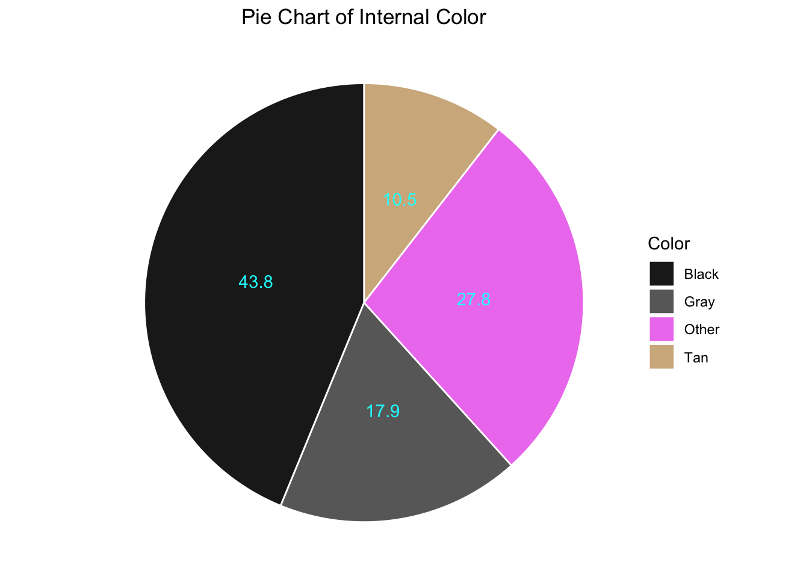
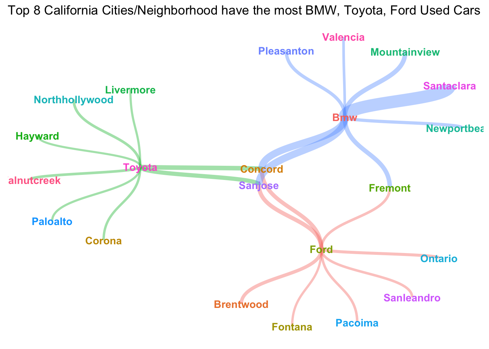

# set up python env
library(reticulate)
use_python('/Library/Frameworks/Python.framework/Versions/3.7/bin/python3')# load the data
import pandas as pd
pd.set_option('display.max_columns', None)
cars = pd.read_csv('used_car.csv')
# get to know about the data
cars.head()## Unnamed: 0 City_MPG Highway_MPG City State vin \
## 0 0 17 24 Indianapolis IN 1GKKRSED1BJ179334
## 1 1 19 29 Fishers IN 2G1WF5EK1B1155818
## 2 2 17 24 BeechGrove IN WBAEU334X4PM59833
## 3 3 19 25 Fishers IN JN8AE2KP4E9106731
## 4 4 24 25 Fishers IN 3N6CM0KN7DK693736
##
## price body_style drive_type engine ext_color fuel \
## 0 14995 SUV FWD ['6', '3.6L'] Unspecified Gasoline
## 1 7894 Sedan FWD ['6', '3.5L'] White Flexible-Fuel
## 2 4200 Sedan AWD ['6', '2.5L'] Gray Gasoline
## 3 21200 Minivan FWD ['6', '3.5L'] White Gasoline
## 4 10000 Van FWD ['4', '2.0L'] White Gasoline
##
## int_color location make milage model mpg_city_highway \
## 0 Unspecified Indianapolis,IN GMC 90440 Acadia 17/24
## 1 Black Fishers,IN Chevrolet 85961 Impala 19/29
## 2 Black BeechGrove,IN BMW 152000 3Series 17/24
## 3 Tan Fishers,IN Nissan 40347 Quest 19/25
## 4 Gray Fishers,IN Nissan 103728 NV200 24/25
##
## stock transmission year Region Num_Cyl Cyl_Volume
## 0 E79334 Automatic 2011 Central 6 3.6
## 1 PV5110A Automatic 2011 Central 6 3.5
## 2 m59833 Automatic 2004 Central 6 2.5
## 3 18B378 Automatic 2014 Central 6 3.5
## 4 693736 Automatic 2013 Central 4 2.0# remove some meaningless columns and reduplicate columns
del cars['vin']
del cars['engine']
del cars['location']
del cars['mpg_city_highway']
del cars['stock']
# check NA values
cars.isnull().sum().sum()## 0# visualize categorical type of features of used cars
# learn about "body_style" feature
cars = py$cars
table(cars$body_style)##
## Chassis Convertible Coupe Hatchback Minivan Pickup
## 5 648 1091 1089 730 2432
## Sedan SUV Van Wagon
## 9062 10314 127 563# remove outliers - 'Chassis' body_style
cars = subset(cars, body_style != 'Chassis')
# plot
library(ggplot2)
library(wesanderson)
theme_update(plot.title = element_text(hjust = 0.5))
ggplot(cars, aes(x=body_style,color=body_style)) +
geom_bar(fill='white') +
geom_text(stat='count', aes(label=..count..), vjust=-1,size=5,position = position_dodge(0.9))+
scale_fill_manual(values=wes_palette(n=3, name="Royal2")) +
scale_y_continuous(limits = c(0, 12000)) +
labs(title = 'Barplot of Body Style', x='Body Style', y='Count')# learn about 'drive_type' feature
table(cars$drive_type)##
## 4WD AWD FWD RWD Unspecified
## 4323 6097 11104 4524 8# remove outliers - 'Unspecified' drive_type
cars = subset(cars, drive_type != 'Unspecified')
# Since both '4WD' and 'AWD' mean all wheels drive, we combine them together
library(plyr)
cars$drive_type <- revalue(cars$drive_type, c('4WD' = 'AWD'))
# plot
ggplot(cars, aes(x=drive_type,color=drive_type)) +
geom_bar(fill='white') +
geom_text(stat='count', aes(label=..count..), vjust=-1,size=5,position = position_dodge(0.9))+
scale_fill_manual(values=wes_palette(n=3, name="Royal2")) +
scale_y_continuous(limits = c(0, 12000)) +
ggtitle('Barplot of Drive Type')# learn about 'ext_color' feature
table(cars$ext_color)##
## Beige Black Blue Bronze Brown Burgundy
## 376 6034 2086 99 349 75
## Gold Gray Green Orange Purple Red
## 211 4297 260 133 37 2036
## Silver Turquoise Unspecified White Yellow
## 4014 13 643 5307 78library("dplyr")
# plot pie chart of "ext_color" feature
ec_df = data.frame(table(cars$ext_color)) # create a dataframe
names(ec_df) <- c('Color', 'Count') # rename column name
ec_df$Color <- as.character(ec_df$Color) # convert column type
ec_df$Per <- round(ec_df$Count / sum(ec_df$Count) * 100, 1) # compute the percentage
ec_df <- subset(ec_df, Per != 0) # remove color with 0 percentage
# sort based on percentage
ec_df <- ec_df[order(-ec_df$Count),]
# combine minority color to 'Other'
sum_count = sum(ec_df$Count)
other_count = sum_count - 6034 - 5307 - 4297 - 4014 - 2086 - 2036
other_per = round(other_count/sum_count*100, 1)
newRow <- c('Other',(other_count), (other_per)) # combine those counts less than 1k
ec <- rbind(ec_df[1:6,], newRow)
ec$Count = as.integer(ec$Count)
ec$Per = as.numeric(ec$Per)# add label position
ec <- ec %>%
arrange(desc(Color)) %>%
mutate(lab.ypos = cumsum(Per) - 0.5*Per)
# plot
mycols <- c('gray12', 'royalblue2', 'dimgray', 'violet', 'red3', 'gray77', 'gray96') # Other - violet
ggplot(ec, aes(x = "", y = Per, fill = Color)) +
geom_bar(width = 1, stat = "identity", color = "white") +
coord_polar("y", start = 0)+
geom_text(aes(y = lab.ypos, label = Per), color = "cyan")+
scale_fill_manual(values = mycols) +
theme_void() +
theme(plot.title = element_text(hjust = 0.5))+
ggtitle('Pie Chart of External Color')# learn about 'int_color' feature
table(cars$int_color)##
## Black Blue Brown Gray Green Orange
## 11412 45 619 4650 5 9
## Red Tan Unspecified White Yellow
## 132 2728 6113 327 8# plot pie chart of "int_color" feature
ic_df = data.frame(table(cars$int_color)) # create a dataframe
names(ic_df) <- c('Color', 'Count') # rename column name
ic_df$Color <- as.character(ic_df$Color) # convert column type
ic_df$Per <- round(ic_df$Count / sum(ic_df$Count) * 100, 1) # compute the percentage
ic_df <- subset(ic_df, Per != 0) # remove color with 0 percentage
# sort based on percentage
ic_df <- ic_df[order(-ic_df$Count),]
# combine minority color and unspecified color to 'Other'
sum_count = sum(ic_df$Count)
other_count = sum_count - 11412 - 4650 - 2728
other_per = round(other_count/sum_count*100, 1)
newRow <- c('Other',(other_count), (other_per))
ic <- rbind(ic_df[1,], newRow)
ic <- rbind(ic, ic_df[3:4, ])
ic$Count = as.integer(ic$Count)
ic$Per = as.numeric(ic$Per)# add label position
ic <- ic %>%
arrange(desc(Color)) %>%
mutate(lab.ypos = cumsum(Per) - 0.5*Per)
# plot
mycols <- c('gray12', 'dimgray', 'violet', '#D2B48C') # Other - violet
ggplot(ic, aes(x = "", y = Per, fill = Color)) +
geom_bar(width = 1, stat = "identity", color = "white") +
coord_polar("y", start = 0)+
geom_text(aes(y = lab.ypos, label = Per), color = "cyan")+
scale_fill_manual(values = mycols) +
theme_void() +
theme(plot.title = element_text(hjust = 0.5)) +
ggtitle('Pie Chart of Internal Color')
# learn about "fuel" feature
table(cars$fuel)##
## Alternative Diesel Flexible-Fuel Gasoline Hybrid
## 3 568 2683 22214 580# remove outliers
cars = subset(cars, fuel != 'Alternative')
fuel_tbl = table(cars$fuel)
# waffle plot
library(waffle)
waffle(fuel_tbl/200, rows = 7,, xlab = '1 square = 200 cars', title = 'Waffle Plot of Used Cars Fuel Type')+theme(plot.title = element_text(hjust = 0.5))# learn about "transmisison" feature
table(cars$transmission)##
## Automatic Manual Unspecified
## 24903 904 238library(ggpubr)
library(cowplot)
# remove 'Unspecified' cars
cars = subset(cars, transmission != 'Unspecified')
# remove MPG == 0
cars = subset(cars, City_MPG != 0)
cars = subset(cars, Highway_MPG != 0)
# Scatter Plots
plot1 <- ggplot(cars, aes(x = City_MPG, y = Highway_MPG)) +
geom_count(aes(color = transmission))+
theme(plot.title = element_text(hjust = 0.5))+
theme_light()+ theme(plot.title = element_text(hjust = 0.5)) +
ggtitle('Scatter Plot of MPG based on Different Transmission')
plot2 <- ggplot(cars, aes(x = City_MPG, y = Highway_MPG)) +
geom_count(aes(color = drive_type))+
theme_pubclean()+ theme(plot.title = element_text(hjust = 0.5)) +
ggtitle('Scatter Plot of MPG based on Different Drive Type')
plot3 <- ggplot(cars, aes(x = City_MPG, y = Highway_MPG)) +
geom_count(aes(color = fuel))+
theme_half_open()+ theme(plot.title = element_text(hjust = 0.5)) +
ggtitle('Scatter Plot of MPG based on Different Fuel Type')
plot4 <- ggplot(cars, aes(x = City_MPG, y = Highway_MPG)) +
geom_count(aes(color = factor(Num_Cyl)))+
theme_bw()+ theme(plot.title = element_text(hjust = 0.5)) +
ggtitle('Scatter Plot of MPG based on Different #ofCylinders')
plot1plot2plot3plot4# learn about distribution of milage and price (continuous feature)
ggplot(cars, aes(x=price)) +
geom_histogram(binwidth = 5000, color='red', fill='royalblue3')+
theme_half_open()+ theme(plot.title = element_text(hjust = 0.5))+ ylim(c(0,6000))+
labs(title='Distribution of Used Cars Price', y='Count', x='Price(USD)')# learn about 'year'
pp <- ggplot(data=cars, aes(x=year)) +
geom_bar(aes(y = (..count..)/sum(..count..)), fill='lightpink2')+ xlim(c(2000, 2020)) +
labs(title= 'Bar Plot of Used Car Year')+ ylab('Percentage')+xlab('Year')+
theme_pubclean() + theme(plot.title = element_text(hjust = 0.5))
library(scales)
pp + scale_y_continuous(labels = percent) + coord_flip()## hex
ggplot(cars, aes(year, price))+
geom_hex(bins=20)+theme(plot.title = element_text(hjust = 0.5))+
theme(plot.subtitle = element_text(hjust = 0.5))+ xlim(c(2000,2020))+ ylim(c(2000,80000))+
labs(title='Price Density Hex Plot', subtitle = 'accordigng to year', y='Price(USD)', x='Year')# word cloud - car 'make' and 'model'
write.table(cars$make, "make.txt", sep="\t",row.names=FALSE, quote = FALSE)
write.table(cars$model,"model.txt",sep="\t",row.names=FALSE, quote = FALSE)# generate the car make and model word cloud
library(tm)
library(SnowballC)
library(wordcloud2)
library(RColorBrewer)
# Read the text file
make_text = readLines('make.txt')
model_text = readLines('model.txt')
# Load the data as a corpus
doc <- Corpus(VectorSource(make_text))
docs <- Corpus(VectorSource(model_text))
# inspect(docs)
## Make
dtm_ <- TermDocumentMatrix(doc)
m_ <- as.matrix(dtm_)
v_ <- sort(rowSums(m_),decreasing=TRUE)
d_ <- data.frame(word = names(v_),freq=v_)
## Model
dtm <- TermDocumentMatrix(docs)
m <- as.matrix(dtm)
v <- sort(rowSums(m),decreasing=TRUE)
d <- data.frame(word = names(v),freq=v)
# generate the word cloud - Make
wordcloud2(d_, size= 1, color = 'random-light', backgroundColor = 'grey')# generate the word cloud
wordcloud2(d, size= 0.9, color = 'random-dark', shape = 'diamond')# Special Task
## Data Prep
# load in original data
import numpy as np
import pandas as pd
vh = pd.read_csv('used_car.csv')
# top 20 cars - List
car_list= ["F-150", "3Series", "Civic","Malibu","Accord","Camry","Focus","Escape","Altima","C-Class","Rogue","Explorer","Passat","Tucson","CR-V","Sonata","Corolla","Fusion","Cruze","Jetta"]
# mean City MPG of each car - List
mpg_list = []
for v in car_list:
mpg_list.append(round(np.mean(vh['City_MPG'][vh['model'] == v].values), 2))
vh = pd.DataFrame({'name': car_list, 'mpg': mpg_list})vh = py$vh
theme_set(theme_bw())
# Data Prep Cont...
vh$mpg_z <- round((vh$mpg - mean(vh$mpg))/sd(vh$mpg), 2) # compute normalized mpg
vh$mpg_type <- ifelse(vh$mpg_z < 0, "below", "above") # above / below avg flag
vh <- vh[order(vh$mpg_z), ] # sort
vh$name <- factor(vh$name, levels = vh$name) # convert to factor to retain sorted order in plot.
# Diverging Barcharts
ggplot(vh, aes(x=name, y=mpg_z, label=mpg_z)) +
geom_bar(stat='identity', aes(fill=mpg_type), width=.5) +
scale_fill_manual(name="MPG",
labels = c("Above Average", "Below Average"),
values = c("above"="#00ba38", "below"="#f8766d")) +
theme(plot.title = element_text(hjust = 0.5))+
theme(plot.subtitle = element_text(hjust = 0.5))+
labs(title= "Analysis of Top 20 Models City MPG", subtitle = "Top 20 Most Popular Models in the Used Cars Market") + coord_flip()+
ylab('Normalized MPG') + xlab('Model')From the chart above, we can clearly see that basic entry-level models such as Civic and Corolla are relatively fuel-efficient for daily transportation; in addition, big pickup trucks such as F150, other SUVs, and German high-end sedans are more fuel-costly.
t2 = pd.read_csv('used_car.csv')
# civic
t2_civic = t2[t2['model'] == 'Civic']
civic_year = sorted([2015,2016,2017,2013,2014,2012,2010,2008,2009,2011,2006,2007,2004,2005,2003,2013])
civic_price = []
for y in civic_year:
civic_price.append(int(np.mean(t2_civic['price'][t2_civic['year'] == y].values)))
civic_model = ['Civic','Civic','Civic','Civic','Civic','Civic','Civic','Civic','Civic','Civic','Civic','Civic','Civic','Civic','Civic','Civic']
civic = pd.DataFrame({'year': civic_year, 'price': civic_price, 'model':civic_model})
# corolla
t2_corolla = t2[t2['model'] == 'Corolla']
corolla_year = sorted([2015,2016,2017,2013,2010,2014,2018,2011,2005,2012,2009,2007,2006,2004,2002,2008])
corolla_price = []
for y in corolla_year:
corolla_price.append(int(np.mean(t2_corolla['price'][t2_corolla['year'] == y].values)))
corolla_model = ['Corolla','Corolla','Corolla','Corolla','Corolla','Corolla','Corolla','Corolla','Corolla','Corolla','Corolla','Corolla','Corolla','Corolla','Corolla','Corolla']
corolla = pd.DataFrame({'year': corolla_year, 'price': corolla_price, 'model':corolla_model})
# explorer
t2_explorer = t2[t2['model'] == 'Explorer']
explorer_year = sorted([2015,2016,2014,2017,2013,2012,2011,2007,2003,2018,2008,2010,2006,2005,2004,2002])
explorer_price = []
for y in explorer_year:
explorer_price.append(int(np.mean(t2_explorer['price'][t2_explorer['year'] == y].values)))
explorer_model = ['Explorer','Explorer','Explorer','Explorer','Explorer','Explorer','Explorer','Explorer','Explorer','Explorer','Explorer','Explorer','Explorer','Explorer','Explorer','Explorer']
explorer = pd.DataFrame({'year': explorer_year, 'price': explorer_price, 'model':explorer_model})
task2 = pd.concat([civic, corolla, explorer])library(plotly)## Warning: package 'plotly' was built under R version 3.6.2##
## Attaching package: 'plotly'## The following objects are masked from 'package:plyr':
##
## arrange, mutate, rename, summarise## The following object is masked from 'package:ggplot2':
##
## last_plot## The following object is masked from 'package:stats':
##
## filter## The following object is masked from 'package:graphics':
##
## layouttask2=py$task2## Warning in py_to_r.pandas.core.frame.DataFrame(x): index contains duplicated
## values: row names not set# plot
fig <- plot_ly(task2, x = ~year, y = ~price, color= ~model, type = 'scatter', mode = 'lines')
fig <- fig %>% layout(title = '3 Polular Used Car Models Price Trend Plot',
yaxis = list(title = 'Price'),
xaxis = list(autorange='reversed'))
fig## Warning: `arrange_()` is deprecated as of dplyr 0.7.0.
## Please use `arrange()` instead.
## See vignette('programming') for more help
## This warning is displayed once every 8 hours.
## Call `lifecycle::last_warnings()` to see where this warning was generated.As can be seen from the line chart above, Japanese-brand entry-level sedans, such as Corolla, Civic, have a large quantity in the used car market, so their prices will undoubtedly decrease with the time of use.
In addition, we have an interesting findings. As Ford’s main SUV model–Explorer, its 2006 model is more expensive than the 2007 model in the used car market. I checked some information and found that the Explorer had a new generation in 2006. The sales performance of the fourth-generation Explorer(2006) going on the market continued the decline of the third-generation model, and it did not achieve good reputation when it was launched. Moreover, Coupled with the 2008 financial crisis that followed, the quantity of 2006 Explorer in the market can be said to be very small, which may cause its price to be higher than 2007, 2008 version. If you want to know more information about explorer, you can check the link below:
‘https://www.topspeed.com/cars/six-generations-of-the-ford-explorer-ar184141.html’
If you are considering buying or selling a used car, you must want to know about the car ownership near where you are. Let’s take California as an example to see how many vehicles there are in each county in California.
Data reference: “https://www.dmv.ca.gov/portal/uploads/2020/06/2019-Estimated-Vehicles-Registered-by-County-1.pdf”.
library(sf)
library(dplyr)
options(scipen = 999)
ca_shape_map = st_read('CA_Counties/CA_counties_TIGER2016.shp', stringsAsFactors = FALSE)## Reading layer `CA_Counties_TIGER2016' from data source `/Users/kuiyuzhu/Desktop/503pf/ANLY503_Portfolio/CA_Counties/CA_Counties_TIGER2016.shp' using driver `ESRI Shapefile'
## Simple feature collection with 58 features and 17 fields
## geometry type: MULTIPOLYGON
## dimension: XY
## bbox: xmin: -13857270 ymin: 3832931 xmax: -12705030 ymax: 5162404
## CRS: 3857t3 = read.csv('ESTIMATED_AUTOS_REGISTERED_BY_COUNTY.csv') # read in data
t3$Percentage1000 <- t3$Autos/sum(t3$Autos) *1000
t3_ = inner_join(ca_shape_map, t3, by='NAME')
t3_plot = ggplot(t3_)+
geom_sf(aes(fill= Percentage1000))+
scale_fill_gradient(low = '#99CCFF', high = '#003366')+
labs(title='Estimated Autos Registered by County in California-2019')
t3_plotLos Angeles County has the most newly registered cars, and the number is overwhelming.
# data prepare
t4 = pd.read_csv('used_car.csv')
# CA
t4 = t4[t4['State'] == 'CA']
# Ford
t4_ford = t4[t4['make'] == 'Ford']
t4_ford_city = t4_ford['City'].value_counts().keys().tolist()[0:8]
t4_ford_count = t4_ford['City'].value_counts().tolist()[0:8]
t4_ford_list = ['Ford','Ford','Ford','Ford','Ford','Ford','Ford','Ford']
ford_top8 = pd.DataFrame({'Make': t4_ford_list, 'City': t4_ford_city, 'Count':t4_ford_count})
# Toyota
t4_toyota = t4[t4['make'] == 'Toyota']
t4_toyota_city = t4_toyota['City'].value_counts().keys().tolist()[0:8]
t4_toyota_count = t4_toyota['City'].value_counts().tolist()[0:8]
t4_toyota_list = ['Toyota','Toyota','Toyota','Toyota','Toyota','Toyota','Toyota','Toyota']
toyota_top8 = pd.DataFrame({'Make': t4_toyota_list, 'City': t4_toyota_city, 'Count':t4_toyota_count})
# BMW
t4_bmw = t4[t4['make'] == 'BMW']
t4_bmw_city = t4_bmw['City'].value_counts().keys().tolist()[0:8]
t4_bmw_count = t4_bmw['City'].value_counts().tolist()[0:8]
t4_bmw_list = ['BMW','BMW','BMW','BMW','BMW','BMW','BMW','BMW']
bmw_top8 = pd.DataFrame({'Make': t4_bmw_list, 'City': t4_bmw_city, 'Count':t4_bmw_count})
top8 = pd.concat([ford_top8,toyota_top8,bmw_top8])# transfer data to r env
flow = py$top8
flow$Count = ((flow$Count - min(flow$Count)) / (max(flow$Count) - min(flow$Count))) / 2 # convert for visualization# start to plot
library(tidygraph)
library(stringr)
library(ggraph)
graph_flow <- as_tbl_graph(flow)
graph_flow <- graph_flow %>%
activate(nodes) %>%
mutate(
title = str_to_title(name),
label = str_replace_all(title, " ", "\n")
)
# set theme
thm <- theme_minimal() +
theme(
legend.position = "none",
axis.title = element_blank(),
axis.text = element_blank(),
panel.grid = element_blank(),
panel.grid.major = element_blank(),
)
theme_set(thm)
# plot
graph_flow %>%
ggraph(layout = 'kk') +
geom_edge_diagonal(aes(colour = factor(from), width = Count), alpha=0.4, ends = "last", type = "open") +
geom_node_text(aes(label = label, color = name, fontface='bold'), size = 3.8) +
labs(title = 'Top 8 California Cities/Neighborhood have the most BMW, Toyota, Ford Used Cars')